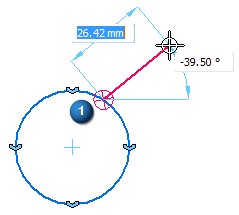
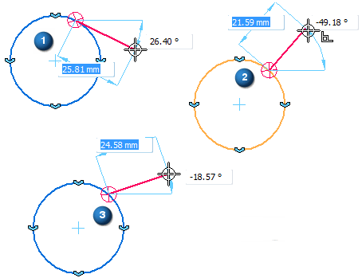
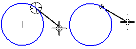
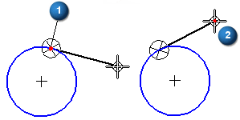
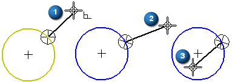
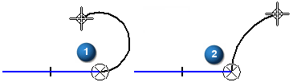
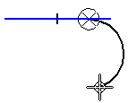
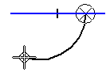
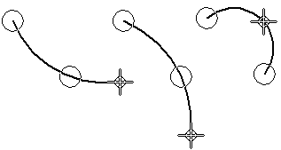

Intent zones
Solid Edge uses intent zones to interpret your intentions as you draw and modify elements. Intent zones allow you to draw and modify elements many ways using few commands. You do not need to select a different command for every type of element.
How intent zones work
When you click to begin drawing certain elements, the software divides the region around the clicked position into four intent zone quadrants. For example, when drawing a line that is connected to a circle, four intent zones are displayed around the point you clicked (1).

Two of these intent zones allow you to draw the line tangent to the circle. The other two intent zones allow you to draw the line perpendicular to, or at some other orientation relative to the circle.
By moving the cursor through one of these intent zones on the way to your next click location, you can tell the software what you want to do next. This allows you to control whether the line is tangent to the circle (1), perpendicular to the circle (2), or at some other orientation (3).

The last intent zone you move the cursor into is the active zone. To change the active intent zone, move the cursor back into the zone circle, and then move the cursor out through the intent zone quadrant to the position where you want to click next.
Intent zone size
You can change the size of the intent zones with the IntelliSketch command. The Intent Zone option on the Cursor tab on the IntelliSketch dialog box allows you to set the intent zone size.

Drawing lines tangent or connected to curved elements
Using intent zones with the Line command, you can draw a line tangent to a circle or arc. Or you can draw a line that is connected to the circle or arc, but not tangent to it.
To draw an line tangent to a circle, first click a point on the circle (1) to place the first end point of the line. Then move the cursor through the tangent intent zone. As you move the cursor, the line remains tangent to the circle. Position the cursor where you want the second end point of the line (2), then click to place the second end point.

If you do not want the line to be tangent to the circle, you can move the cursor back into the intent zone region and out through one of the perpendicular zones (1) before clicking to place the second end point of the line. When you move the cursor through the perpendicular zones, you can also draw the line such that it is not perpendicular to the circle (2) and (3).

The Line command also allows you to draw a connected series of lines and arcs. You can use the L and A keys on the keyboard to switch from line mode to arc mode. When you switch modes, intent zones (1) and (2) are displayed at the last click point.

The intent zones allow you to control whether the new element is tangent to, perpendicular to, or at some other orientation to the previous element.
Drawing tangent or perpendicular arcs
You can use intent zones to change the result of the Tangent Arc command. To draw an arc tangent to a line, first click a point on the line to place the first end point of the arc. Then move the cursor through the tangent intent zone and click to place the second end point of the arc.

If you do not want the arc to be tangent to the line, you can move the cursor back into the intent zone region and out through the perpendicular zone before clicking to place the second end point of the arc.

Drawing arcs by three points
When you use the Arc By 3 Points command, intent zones allow you to input the three points in any order. You can also use intent zones to change the arc direction. The intent zone used with the Arc By 3 Points command is not divided into quadrants.
